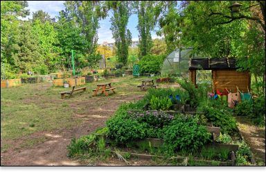
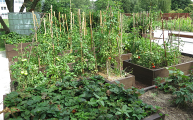
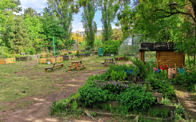

Záhradka na streche Starej Tržnice
Na našej zelenej streche sa jar začína skôr ako v okolitom priestore. A navyše dobrý pestovateľ sa na sezónu pripravuje vopred.
Pridaj sa

Komunitná záhrada Ostredky
Komunitná záhrada Ostredky je prvá svojho druhu v Ružinove a nachádza sa v strede obľúbeného sídliska
Pridaj sa

KoZa v Háji
Náš cieľ je vytvoriť a prevádzkovať sídliskovú komunitnú záhradu na nevyužívanej ploche bývalého detského ihriska v petržalskom vnútrobloku.
Pridaj sa